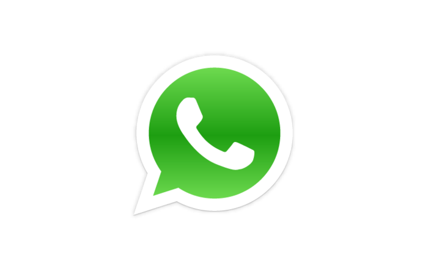

CONTACTO
Si quieres comunicarte conmigo puedes escribirme por correo, Facebook o llamarme


3115540954
nicolaspovedas@gmail.com
Inicie construyendo Landing pages para mis negocios: ESTARTER, BOGOTÁ CITY BUS , RUTAS y mil proyectos más; las hacia en plataformas como Wix, Instapage, me quedaban bastante bonitas, incluso más que a muchos programadores, pues siempre he tenido buen gusto (al menos eso creo). Las que muestro a continuación son diseñadas por mi gran amigo Michael Martinez, quien es el mejor diseñador web que conozco.
Luego quise profundizar y lo intenté por muchos medios, como MOODS (Coursera, Codeschool, Codedemy, etc.) también intenté con Platzi, que aunque me encanta como concepto, no comparto su metodología, todo esto fue muy útil pues aprendí conceptos básicos, pero aún no era lo que buscaba
Un día tuve mi mejor idea hasta el momento: RUTAS. Rutas es una idea de negocio que busca optimizar el uso de los vehículos en las grandes ciudades, para reducir el tráfico y la contaminación. ¿Como se haría? Simple. Compartiendo nuestros vehículos con personas que tengan rutas y horarios similares. Aunque el concepto es simple, el desarrollo de la idea no resultó tan fácil (como era de esperarse). Mi idea fue muy bien recibida por el público en general, y el fan apge tuvo 4.000 likes en pocas semanas además al chat no dejaban de llegar mensajes. Teníamos una gran idea y teníamos clientes. ¿Qué más se npuede pedir? Pues mucho, esto no es suficiente. Todos tenemos buenas ideas, lo que las diferencia es la ejecución y yo no estba preparado apra ejecutar una idea de esta magnitud. Logré lanzar una prueba piloto con dos vehículos y funcónó bastante bien, nuestros clientes estaban encantados. Pero la tarea de coordinar esto era agotadora, me desperté a las 4 AM y me iba a dormir a las 12 PM, por más de 3 meses. Mi cuerpo estaba agotado y yono encontraba otra manera de hacer las cosas. Me rendí. Aún no estaba preparado para semejante proyecto.
Seguí con mi vida normal por unos meses aunque decepcionado de mi mismo, además que todas las personas que me conocen siempre me preguntaban como iba mi proyecto.
Un día "feisbuquiando" encontré Make it real, me encantó el concepto, pues siempre me han gustado las soluciones rápidas (¿gran defecto o gran virtud?), tenían un programa presencial en el que te enseñaban a programar en 12 semanas, pensé: es justo lo que necesito. Me inscribí, me entrevistaron, pasé, pero no había tenido en cuenta que los horarios eran absolutamente todo el día, todos los días. Y yo vivo de mi trabajo, por lo cual, tuve que dejar pasar esta oportunidad.
Meses depués, me decidí a ingresar al programa virtual, aunque sigo prefiriendo lo presencial, era mi mejor opción. Hasta ahora llevo una semana y aquí estoy...
Si quieres comunicarte conmigo puedes escribirme por correo, Facebook o llamarme